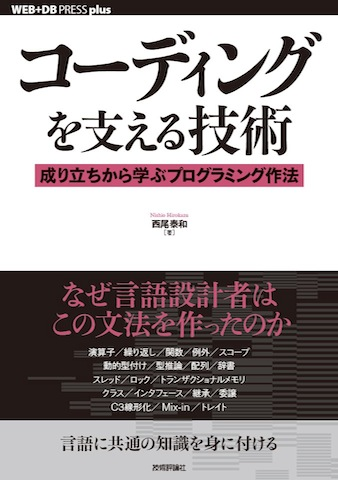

世の中にはたくさんのプログラミング言語があります。そしてプログラミングに関する概念も、関数、型、スコープ、クラス、継承など、さまざまなものがあります。多くの言語で共通して使われる概念もあれば、一部の言語でしか使われない概念もあります。これらの概念は、なぜ生まれたのでしょうか。本書のテーマは、その「なぜ」を理解することです。
そのために本書では、言語設計者の視点に立ち、複数の言語を比較し、そして言語がどう変化してきたのかを解説します。いろいろな概念が「なぜ」生まれたのかを理解することで、なぜ使うべきか、いつ使うべきか、どう使うべきかを判断できるようになるでしょう。そして、今後生まれてくる新しい概念も、よりいっそう理解しやすくなることでしょう。
■技術評論社の書籍情報ページからは、 書籍内容に関するお問い合わせや、 学校・法人向け一括購入、テキスト採用検討用の献本のご依頼が可能です。
■Amazonでの書籍ページはこちら: 「コーディングを支える技術」
■2018-09-23 今後はScrapbox上の公式ページで情報を更新していきます。
■2018-08-10 特別企画「エンジニアの学び方」が発展し一冊の本になった「エンジニアの知的生産術」が発売されました！
■2018-04-24 インタビュー記事が出ました。『コーディングを支える技術』の西尾泰和と考える、エンジニアが学ぶべき技術の原理原則 - エンジニアHub｜若手Webエンジニアのキャリアを考える！
■2017-12-18 第4刷の発売が決まりました！
■2016-07-29 第3刷の発売が決まりました！
■2014-12-10 電子書籍版が発売されました！技術評論社の Gihyo Digital PublishingからPDF版を購入することができます。
■2014-08-31 中国語版が発売されました！代码之髓：编程语言核心概念。タイトルの「代码之髓：编程语言核心概念」はエキサイト翻訳によれば「コードの髄：プログラミング言語の核心概念」という意味らしいです。核心概念って言葉がカッコイイですね！
■2014-08-29 英語版を作成中です。
■2014-07-22 特集記事「エンジニアの学び方─効率的に知識を得て，成果に結び付ける」が技術評論社のウェブサイトで読めるようになりました。
■2014-04-22 本書の学び方についてのコラムが好評だったので、発展させてWEB+DB PRESS Vol.80 特別企画「エンジニアの学び方」を執筆しました。詳細はこちらをごらんください: 「エンジニアの学び方」を執筆しました。
■2014-03-20 韓国語版が発売されました！인터넷서점 인터파크도서 - 코딩을 지탱하는 기술, YES24 - 대한민국 대표 인터넷서점, 코딩을 지탱하는 기술 – Daum 책
■2014-01-10 2013年に発売されたコンピュータ書の中で売上冊数1位になりました！ありがとうございます！ 2013年以外の書籍も含めると、2012年発売の「リーダブルコード」が1位で、拙著は2位でした。ref. 2013年ジュンク堂池袋本店コンピュータ書売上冊数ランキング第2位：西尾泰和『コーディングを支える技術 成り立ちから学ぶプログラミング作法』
■2013-09-19 第2刷が発売になりました！第1刷に対する正誤情報は反映済みです。こちらへ移動しました：第1刷の正誤情報
■2013-08-20 Amazonにて【コンピュータ・IT > プログラミングで一番ほしい物リストに追加されている商品】ランキングで3位になりました。
■2013-08-01 Amazon「一番ギフトとして贈られている商品」(コンピュータ・IT部門)ランキングで1位になりました。ギフトとしてよく贈られてるのは、 きっと読んだ方が「ほかの人にも役に立つ」と思ってくださっているのでしょうね。ベストセラーになったことよりも嬉しいです。
■2013-05-07 ジュンク堂池袋店での売上が先行発売から20日で100冊を突破しました！このペースは『リーダブルコード』や『パターン認識と機械学習の学習』以来の快挙だそうです！お買い上げありがとうございます！今後も補足記事などで説明の改善に努めますので、わかりにくい点などがありましたらぜひご連絡下さい。
■2013-05-02 在庫切れの書店が多い拙著ですが、ジュンク堂池袋店、三宮店、那覇店、丸善丸ノ内店、ラゾーナ川崎店、にはまだ在庫があるようです。 買う前に手にとってみたい方はご参考にしてください。 店舗在庫検索 | 丸善＆ジュンク堂ネットストア
■2013-04-25 「何をどう学ぶか？」の続編を公開しました。
■2013-04-23 ジュンク堂池袋店に170冊入荷しました！当面在庫切れの心配はなさそうです！
■2013-04-20 補足記事「評価戦略について」を公開しました。
■2013-04-18 サンプルコードをGitHub上で公開しました。
■2013-04-17 電子書籍化の予定についてのお問い合わせをいただきました。お問い合せありがとうございます。電子化は検討中ですが、現時点では電子版の販売について具体的には決定していない状態です。ご容赦ください。
■2013-04-14 目次情報を掲載しました。
■2013-04-12 Amazonの「プログラミング」カテゴリーで、ベストセラー1位になりました！ご愛顧ありがとうございます！(書籍全体では70位)
■2013-04-10 執筆中に考えていたことをスライドにまとめました「 何をどう学ぶか？ 」
誤：「降順」
正：「昇順」
補足説明：キーが降順にソートされているなら、後から追加されるものが先に追加されたものより小さいので、左側に追加されることになります。 「右に偏る」を「左に偏る」に修正するのでも問題はないのですが、キーは昇順の方が思考の節約になると考えてこう修正しました。
pp.70-71
補足説明: 「pp.」は「p.」のtypoか？という質問がありましたが、複数ページへの言及の際にはpp.を使います。
変更前:「すべての関数呼び出しをきちんとチェックしよう。そうすれば失敗を見落とすこともない。」そ う 思っ て
変更後:「すべての関数呼び出しをきちんとチェックすれば失敗を見落とすこともないはず」と思って
補足説明: 文の繋がりがわかりやすいように修正しました。
変更前: 条件式が裏返しにならない書き方もできますが、そのコードを紹介するのは紙面の関係で割愛します。
変更後: 条件式が裏返しにならない書き方もできますが、紙幅の都合で割愛し、本書公式サイトで紹介します。
それほど重要なことでもないと考えて脚注だけにしたのですが、気になるという意見があったので書いておきます。 元のコードの「条件式が裏返し」とは、if文だと条件式の直下の行にはその条件式が満たされた場合のコードが来るのに対し、下記のコードでは1の条件式が満たされなかった時に2が実行されるので、逆であることに注意が必要、という話でした。
1: もしxが0以下なら4にジャンプ 2: xが正の時の処理 3: 5にジャンプ 4: xが0以下の時の処理 5: 次の命令これが嫌である場合、もう一つジャンプ命令を追加して下記のように書けばだいぶif文に近くなります。
1: もしxが正なら3にジャンプ 2: (そうでないなら)5にジャンプ 3: xが正の時の処理 4: 6にジャンプ 5: xが0以下の時の処理 6: 次の命令
誤：「方法ついて」
正：「方法について」
誤：「高速なコードが書くのが楽なように設計されているC++と、」
正：「高速なコードを書くのが楽なように設計されているC++と、」
誤：「Op=Mult()」
正：「op=Mult()」
誤：「Op=Add()」
正：「op=Add()」
誤：「LBB1_5((11))にジャンプ」
正：((11))は11の黒丸
誤：「そこ書かれている番地」
正：「そこに書かれている番地」
誤：「ガス漏れに早く気付づける」
正：「ガス漏れに早く気付ける」
訂正：関数shippaiの手前の!を取り除く
補足説明：第2刷でp.60のコードを否定を使わない形に変更しましたが、それ以降のコードを同様に変更することを忘れていました。
誤：「return;」
正：「return 0;」
追加: エラー処理の最後に「return 1;」を追加
補足説明：明示的に0を返す方が、混乱が少ない。また明示的にshippai同様「成功した時に0を返す、失敗した時に非0を返す」という形にした方がよいと考えた。
誤：「という形でした、」
正：「という形でした。」
誤：「それ以外の例外」
正：「その他の例外」
誤：「X = "global"」
正：「x = "global"」
誤：「0から9まの10通りの」
正：「0から9までの10通りの」
誤：「どちらちもO(n^2)になります。」
正：「どちらもO(n^2)になります。」
誤：「ということ学びます。」
正：「ということを学びます。」
誤：「7個分開ける」「3個分の隙間を開けて並べる」「1個分しか開けない」
正：「7個分空ける」「3個分の隙間を空けて並べる」「1個分しか空けない」
検討中：「シフト命令」
補足説明：ISO-2022-JPの規格では「エスケープシーケンス」と呼ばれているので、用語としてはエスケープシーケンスを選ぶのが正しい。 しかしエスケープシーケンスという言葉はキャラクタ端末の制御などにも使われる言葉であり、この言葉だけでは文字集合の切り替えを意味しない。 p.153にてボーコードで文字集合を切り替えるために「シフト」の概念が生まれたことを解説しているので、 ここでも「シフト」という言葉を引き続き使う方がわかりやすいのではないかと思う。
誤：「レーザープリンターでの収益を元に、1970年にパロアルト研究センターを開設」
正：「複写機での収益を元に、1970年にパロアルト研究センターを開設」
補足説明：レーザープリンターの発売開始は1969年であり、それ以前から複写機で市場を独占していたので「複写機での収益」とする方が適切なため。
誤：「ほかの人は入ってこれない」
正：「ほかの人は入ってこられない」
誤：「RECOAD HANDLING」
正：「RECORD HANDLING」
追加：ソースコード末尾に「※本章のサンプルコードは紙面の都合で一部省略しています。省略のない全体のコードは https://github.com/nishio/learn_language/tree/master/langbook/chapter11 に掲載しています。」
誤：本文中の「Counter::new」2箇所
正：「Counter->new」
補足説明：紙面の都合で変更後のソースコード全体を掲載していないため、呼び出し方が変わることを伝えられていませんでした。こちらで省略されていないソースコードを見ることができます： langbook/chapter11#perl-4
誤：「pushが定義されたときの対応表」の値
正：「pushが定義されたときの対応表」の中のcountの値
読者から頂いた質問など対して、ブログで補足記事を書いて行きたいと思っています。お気軽にご質問ください。
補足記事一覧：
また、頂いた書評の一部をこちらに掲載しています。
メールアドレス: nishio (dot) hirokazu (at) gmail (dot) com
西尾泰和のプロフィールに戻る